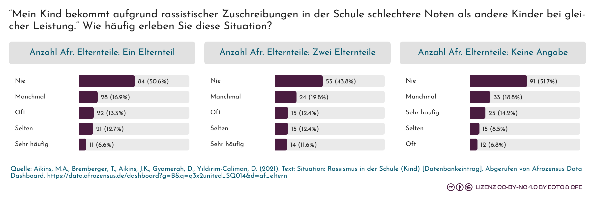
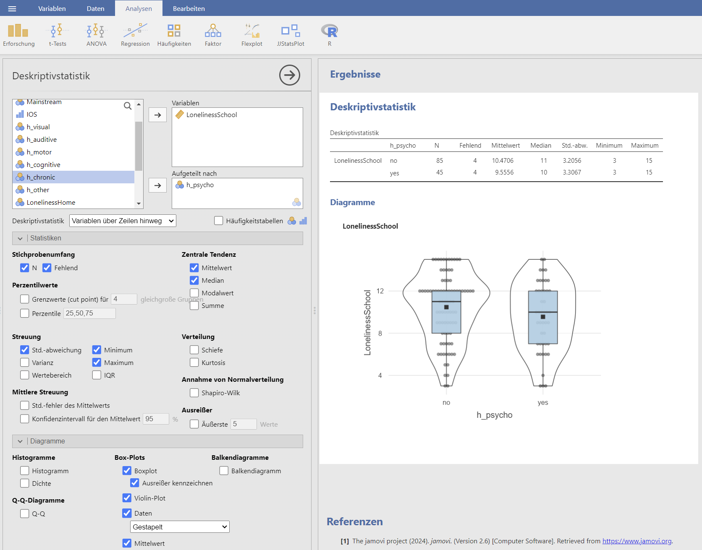

![]()


# Load ggplot2 library
library(ggplot2)
# Create a data frame with counts and percentages
plot_data <- data %>%
count(Rassismus_Lehrer_Dozenten) %>%
mutate(percentage = round(n / sum(n) * 100, 1))
# Create ggplot2 bar plot
ggplot(plot_data, aes(x = factor(Rassismus_Lehrer_Dozenten), y = n)) +
geom_bar(stat = "identity", fill = "lightblue", color = "black") +
geom_text(aes(label = paste0(percentage, "%")),
vjust = -0.5,
size = 3.5) +
labs(title = "Rassismus Lehrer/Dozenten",
x = "Categories",
y = "Frequency") +
theme_minimal() +
theme(axis.text.x = element_text(angle = 45, hjust = 1))Open Science: Open Source Software

Open source software and source code that generally include software whose source code is made publicly available, in a timely and user-friendly manner, in human- and machine-readable and modifiable format, under an open license that grants others the right to use, access, modify, expand, study, create derivative works and share the software and its source code, design or blueprint. The source code must be included in the software release and made available on openly accessible repositories and the chosen license must allow modifications, derivative works and sharing under equal or compatible open terms and conditions. In the context of open science, when open source code is a component of a research process, enabling reuse and replication generally requires that it be accompanied with open data and open specifications of the environment required to compile and run it.
UNESCO (2021). UNESCO Recommendation on Open Science. UNESCO. https://doi.org/10.54677/mnmh8546
Der Übergang von SPSS zu jamovi
Wer oder was ist jamovi?


The jamovi project was founded to develop a free and open statistical platform which is intuitive to use, and can provide the latest developments in statistical methodology. At the core of the jamovi philosophy, is that scientific software should be “community driven”, where anyone can develop and publish analyses, and make them available to a wide audience.
Wir starten jamovi
jamovi-Dokumentation: https://docs.jamovi.org/
jamovi-Buch: https://davidfoxcroft.github.io/lsj-book/
Navarro, D., & Foxcroft, D. (2025). Learning Statistics with jamovi. Open Book Publishers. https://doi.org/10.11647/obp.0333

Daten-Beispiel: Afrozensus
Afrozensus: https://afrozensus.de/about/
Zugang zu ausgewählten Daten der Afrozensus-Befragung: https://data.afrozensus.de/


Afrozensus-Daten
Daten: https://github.com/PawelKulawiak/jamoviintro/raw/refs/heads/main/afrozensus_data_1.xlsx
Variable: Rassismus_Lehrer_Dozenten
- Nie (0)
- Selten (1)
- Manchmal (2)
- Oft (3)
- Sehr häufig (4)
Variable: Anzahl_Afrika_Eltern (Anzahl Afrikanischer Elternteile)
- 1
- 2
Daten-Import und erste Analyse
Wir replizieren das Balkendiagramm und die Häufigkeitstabelle (Variable: Ich werde von Lehrer:innen/Dozierenden rassistisch beleidigt).
Ablauf:
- Daten-Import
- Erforschung/Exploration
- Werte-Labels anlegen
- Farbpalette/Farbschema anpassen
- Syntax-Modus
- Kreisdiagramm (Modul JJStatsPlot installieren)
- Referenzen
- Ergebnisse kommentieren im Text-Editor (Reiter Bearbeiten)
- Ergebnisse löschen
- Ergebnisse exportieren (pdf/html/PNG)
- HTML-Ergebnisse mit Word öffnen
- Jamovi-Projekt abspeichern: jamovi File Format (.omv)
Wir verfeinern die Analysen mit R
Modul Rj Editor für jamovi: https://docs.jamovi.org/_pages/Rj_overview.html

Pawel: I am using R inside jamovi. My data is “data”. Make a bar plot of Rassismus_Lehrer_Dozenten with the percentage on top of each bar, using ggplot2.
LLM: I’ll help you create a ggplot2 bar plot with percentages on top of each bar in jamovi’s R editor:
This ggplot2 code will:
- Load the ggplot2 library (make sure it’s available in your jamovi environment)
-
Create a summary data frame with counts and percentages using
count()andmutate() -
Create a bar plot using
geom_bar()with light blue fill -
Add percentage labels on top of bars using
geom_text() -
Apply clean formatting with
theme_minimal()and rotated x-axis labels
Key features:
-
vjust = -0.5positions the percentage labels above the bars -
factor()ensures proper ordering of categories -
angle = 45, hjust = 1rotates x-axis labels for better readability - The percentages are calculated and displayed with one decimal place
If you need to customize it further, you can:
- Change
fill = "lightblue"to any color you prefer - Adjust
size = 3.5to make the percentage text larger or smaller - Modify the
vjustvalue to position labels higher or lower - Change the theme (e.g.,
theme_classic(),theme_bw())
Paste this code into your jamovi R editor and run it to create your ggplot2 bar chart with percentages!
Pawel: Check my error message:
LLM: You’re getting an error message that says “could not find function ‘%>%’” which is a common issue when working with the pipe operator in R. The pipe operator %>% is part of the magrittr package, which is automatically loaded when you load the dplyr package or the entire tidyverse. To fix this error, you need to load the appropriate package at the beginning of your script:
# Load ggplot2 and tidyverse library
library(ggplot2)
library(tidyverse)
# Create a data frame with counts and percentages
plot_data <- data %>%
count(Rassismus_Lehrer_Dozenten) %>%
mutate(percentage = round(n / sum(n) * 100, 1))
# Create ggplot2 bar plot
ggplot(plot_data, aes(x = factor(Rassismus_Lehrer_Dozenten), y = n)) +
geom_bar(stat = "identity", fill = "lightblue", color = "black") +
geom_text(aes(label = paste0(percentage, "%")),
vjust = -0.5,
size = 3.5) +
labs(title = "Rassismus Lehrer/Dozenten",
x = "Categories",
y = "Frequency") +
theme_minimal() +
theme(axis.text.x = element_text(angle = 45, hjust = 1))Pawel: Nice!
Inferenzstatistik: Klassischer Hypothesentest (Binomialtest)
- Buch-Kapitel: https://davidfoxcroft.github.io/lsj-book/09-Hypothesis-testing.html
- Tutorial: https://datatab.de/tutorial/binomial-test
Fiktives Beispiel: In einer Zeitung wird behauptet, dass bei der Hälfte der Menschen afrikanischer Herkunft ein Elternteil nicht afrikanischer Herkunft sei.
Intuitiv gehen Sie davon aus, dass der Anteil deutlich höher sein müsste (als in der Zeitung behauptet wird). Damit haben wir unsere Forschungshypothese, die sogenannte (gerichtete) Alternativhypothese, formuliert:
- Der Anteil der Menschen afrikanischer Herkunft, die einen Elternteil nicht afrikanischer Herkunft haben, liegt über 50%. (Anteil > 50%)
Dem gegenüber steht die Behauptung aus der Zeitung, die sogenannte Nullhypothese:
- Der Anteil der Menschen afrikanischer Herkunft, die einen Elternteil nicht afrikanischer Herkunft haben, liegt bei 50%. (Anteil = 50%)
Vorgehen:
- Visualisieren (Balkendiagramm/Kreisdiagramm)
- Binomialtest durchführen
| Binomialtest | |||||
|---|---|---|---|---|---|
| Stufe | Anzahl | Insgesamt | Anteil | p | |
| Anzahl_Afrika_Eltern | 1 | 900 | 1313 | 0.685 | <.001 |
| 2 | 413 | 1313 | 0.315 | 1.000 | |
| Anmerkung. Hₐ ist ein Anteil > 0.5 | |||||
Visualisierung (Binomialtest) und Interpretation des p-Wertes

Wasserstein & Lazar, 2016: Informally, a p-value is the probability under a specified statistical model that a statistical summary of the data […] would be equal to or more extreme than its observed value. […] The smaller the p-value, the greater the statistical incompatibility of the data with the null hypothesis, if the underlying assumptions used to calculate the p-value hold.
Wasserstein, R. L., & Lazar, N. A. (2016). The ASA Statement on p-Values: Context, Process, and Purpose. The American Statistician, 70(2), 129–133. https://doi.org/10.1080/00031305.2016.1154108
Die Wahrscheinlichkeit das Stichprobenergebnis (58%) oder ein noch extremeres Stichprobenergebnis (>58%) zu beobachten, unter der Annahme, dass in der Grundgesamtheit (Population) die Annahme der Nullhypothese (50%) gilt, beträgt 6.6% (p = 0.0666). Diese Aussage gilt unter der Bedingung, dass die Stichprobenziehung unendlich oft wiederholt worden ist.
Navarro, D., & Foxcroft, D. (2025):
Unfortunately, there is a third explanation that people sometimes give, especially when they’re first learning statistics, and it is absolutely and completely wrong. This mistaken approach is to refer to the p-value as “the probability that the null hypothesis is true”. It’s an intuitively appealing way to think, but it’s wrong in two key respects. First, null hypothesis testing is a frequentist tool and the frequentist approach to probability does not allow you to assign probabilities to the null hypothesis. According to this view of probability, the null hypothesis is either true or it is not, it cannot have a “5% chance” of being true.
Wasserstein, R. L., Schirm, A. L., & Lazar, N. A. (2019). Moving to a World Beyond “p < 0.05.” The American Statistician, 73(sup1), 1–19. https://doi.org/10.1080/00031305.2019.1583913
- Wasserstein, R. L., Schirm, A. L., & Lazar, N. A. (2019):
- Don’t base your conclusions solely on whether an association or effect was found to be “statistically significant” (i.e., the p-value passed some arbitrary threshold such as p < 0.05).
- Don’t believe that an association or effect exists just because it was statistically significant.
- Don’t believe that an association or effect is absent just because it was not statistically significant.
- Don’t believe that your p-value gives the probability that chance alone produced the observed association or effect or the probability that your test hypothesis is true.
- Don’t conclude anything about scientific or practical importance based on statistical significance (or lack thereof).
Don’t Say “Statistically Significant” (Wasserstein, R. L., Schirm, A. L., & Lazar, N. A., 2019)
The ASA Statement on P-Values and Statistical Significance stopped just short of recommending that declarations of “statistical significance” be abandoned. We take that step here. We conclude, based on our review of the articles in this special issue and the broader literature, that it is time to stop using the term “statistically significant” entirely. Nor should variants such as “significantly different,” “p < 0.05,” and “nonsignificant” survive, whether expressed in words, by asterisks in a table, or in some other way.
Regardless of whether it was ever useful, a declaration of “statistical significance” has today become meaningless. Made broadly known by Fisher’s use of the phrase (1925), Edgeworth’s (1885) original intention for statistical significance was simply as a tool to indicate when a result warrants further scrutiny. But that idea has been irretrievably lost. Statistical significance was never meant to imply scientific importance, and the confusion of the two was decried soon after its widespread use (Boring 1919). Yet a full century later the confusion persists.
And so the tool has become the tyrant. The problem is not simply use of the word “significant,” although the statistical and ordinary language meanings of the word are indeed now hopelessly confused (Ghose 2013); the term should be avoided for that reason alone. The problem is a larger one, however: using bright-line rules for justifying scientific claims or conclusions can lead to erroneous beliefs and poor decision making (ASA statement, Principle 3). A label of statistical significance adds nothing to what is already conveyed by the value of p; in fact, this dichotomization of p-values makes matters worse.
For example, no p-value can reveal the plausibility, presence, truth, or importance of an association or effect. Therefore, a label of statistical significance does not mean or imply that an association or effect is highly probable, real, true, or important. Nor does a label of statistical nonsignificance lead to the association or effect being improbable, absent, false, or unimportant. Yet the dichotomization into “significant” and “not significant” is taken as an imprimatur of authority on these characteristics. In a world without bright lines, on the other hand, it becomes untenable to assert dramatic differences in interpretation from inconsequential differences in estimates. As Gelman and Stern (2006) famously observed, the difference between “significant” and “not significant” is not itself statistically significant.
Furthermore, this false split into “worthy” and “unworthy” results leads to the selective reporting and publishing of results based on their statistical significance—the so-called “file drawer problem” (Rosenthal 1979). And the dichotomized reporting problem extends beyond just publication, notes Amrhein, Trafimow, and Greenland (2019): when authors use p-value thresholds to select which findings to discuss in their papers, “their conclusions and what is reported in subsequent news and reviews will be biased…Such selective attention based on study outcomes will therefore not only distort the literature but will slant published descriptions of study results—biasing the summary descriptions reported to practicing professionals and the general public.” For the integrity of scientific publishing and research dissemination, therefore, whether a p-value passes any arbitrary threshold should not be considered at all when deciding which results to present or highlight.
To be clear, the problem is not that of having only two labels. Results should not be trichotomized, or indeed categorized into any number of groups, based on arbitrary p-value thresholds. Similarly, we need to stop using confidence intervals as another means of dichotomizing (based, on whether a null value falls within the interval). And, to preclude a reappearance of this problem elsewhere, we must not begin arbitrarily categorizing other statistical measures (such as Bayes factors).
Despite the limitations of p-values (as noted in Principles 5 and 6 of the ASA statement), however, we are not recommending that the calculation and use of continuous p-values be discontinued. Where p-values are used, they should be reported as continuous quantities (e.g., p = 0.08). They should also be described in language stating what the value means in the scientific context. We believe that a reasonable prerequisite for reporting any p-value is the ability to interpret it appropriately. We say more about this in Section 3.3.
To move forward to a world beyond “p < 0.05,” we must recognize afresh that statistical inference is not—and never has been—equivalent to scientific inference (Hubbard, Haig, and Parsa 2019; Ziliak 2019). However, looking to statistical significance for a marker of scientific observations’ credibility has created a guise of equivalency. Moving beyond “statistical significance” opens researchers to the real significance of statistics, which is “the science of learning from data, and of measuring, controlling, and communicating uncertainty” (Davidian and Louis 2012).
In sum, “statistically significant”—don’t say it and don’t use it.
Sauer, S. (2019). Moderne Datenanalyse mit R. In FOM-Edition. Springer Fachmedien Wiesbaden. https://doi.org/10.1007/978-3-658-21587-3
Goodman, S. (2008). A Dirty Dozen: Twelve P-Value Misconceptions. Seminars in Hematology, 45(3), 135–140. https://doi.org/10.1053/j.seminhematol.2008.04.003
The P value is a measure of statistical evidence that appears in virtually all medical research papers. Its interpretation is made extraordinarily difficult because it is not part of any formal system of statistical inference. As a result, the P value’s inferential meaning is widely and often wildly misconstrued, a fact that has been pointed out in innumerable papers and books appearing since at least the 1940s. This commentary reviews a dozen of these common misinterpretations and explains why each is wrong. It also reviews the possible consequences of these improper understandings or representations of its meaning. Finally, it contrasts the P value with its Bayesian counterpart, the Bayes’ factor, which has virtually all of the desirable properties of an evidential measure that the P value lacks, most notably interpretability. The most serious consequence of this array of P-value misconceptions is the false belief that the probability of a conclusion being in error can be calculated from the data in a single experiment without reference to external evidence or the plausibility of the underlying mechanism.
Twelve P-Value Misconceptions:
- If P = .05, the null hypothesis has only a 5% chance of being true.
- A nonsignificant difference (eg, P ≥.05) means there is no difference between groups.
- A statistically significant finding is clinically important.
- Studies with P values on opposite sides of .05 are conflicting.
- Studies with the same P value provide the same evidence against the null hypothesis.
- P = .05 means that we have observed data that would occur only 5% of the time under the null hypothesis.
- P = .05 and P ≤.05 mean the same thing.
- P values are properly written as inequalities (eg, “P ≤.02” when P = .015)
- P = .05 means that if you reject the null hypothesis, the probability of a type I error is only 5%.
- With a P = .05 threshold for significance, the chance of a type I error will be 5%.
- You should use a one-sided P value when you don’t care about a result in one direction, or a difference in that direction is impossible.
- A scientific conclusion or treatment policy should be based on whether or not the P value is significant.
Bivariate Statistik: Kategoriale Daten und Kontingenztabellen (Chi-Quadrat-Test)
- Buch-Kapitel: https://davidfoxcroft.github.io/lsj-book/10-Categorical-data-analysis.html
- Tutorial: https://datatab.de/tutorial/kreuztabelle
- Tutorial: https://datatab.de/tutorial/chi-quadrat
- Fragestellung: Gibt es einen Zusammenhang zwischen Diskriminierungserfahrung und Anzahl afrikanischer Elternteile?
- Nullhypothese: Es gibt keinen Zusammenhang zwischen Diskriminierungserfahrung und Anzahl afrikanischer Elternteile.
- Alternativhypothese: Es gibt einen Zusammenhang zwischen Diskriminierungserfahrung und Anzahl afrikanischer Elternteile.
| Kreuztabellen | ||||
|---|---|---|---|---|
| Anzahl_Afrika_Eltern | ||||
| Rassismus_Lehrer_Dozenten | 1 | 2 | Insgesamt | |
| Nie | Beobachtet | 416 | 188 | 604 |
| % der Spalte | 46.2% | 45.5% | 46.0% | |
| Selten | Beobachtet | 271 | 125 | 396 |
| % der Spalte | 30.1% | 30.3% | 30.2% | |
| Manchmal | Beobachtet | 151 | 70 | 221 |
| % der Spalte | 16.8% | 16.9% | 16.8% | |
| Oft | Beobachtet | 37 | 20 | 57 |
| % der Spalte | 4.1% | 4.8% | 4.3% | |
| Sehr Häufig | Beobachtet | 25 | 10 | 35 |
| % der Spalte | 2.8% | 2.4% | 2.7% | |
| Insgesamt | Beobachtet | 900 | 413 | 1313 |
| % der Spalte | 100.0% | 100.0% | 100.0% | |
| Kreuztabellen | ||||
|---|---|---|---|---|
| Anzahl_Afrika_Eltern | ||||
| Rassismus_Lehrer_Dozenten | 1 | 2 | Insgesamt | |
| Nie | Beobachtet | 416 | 188 | 604 |
| Erwartet | 414.0 | 190.0 | 604.0 | |
| % der Spalte | 46.2% | 45.5% | 46.0% | |
| Selten | Beobachtet | 271 | 125 | 396 |
| Erwartet | 271.4 | 124.6 | 396.0 | |
| % der Spalte | 30.1% | 30.3% | 30.2% | |
| Manchmal | Beobachtet | 151 | 70 | 221 |
| Erwartet | 151.5 | 69.5 | 221.0 | |
| % der Spalte | 16.8% | 16.9% | 16.8% | |
| Oft | Beobachtet | 37 | 20 | 57 |
| Erwartet | 39.1 | 17.9 | 57.0 | |
| % der Spalte | 4.1% | 4.8% | 4.3% | |
| Sehr Häufig | Beobachtet | 25 | 10 | 35 |
| Erwartet | 24.0 | 11.0 | 35.0 | |
| % der Spalte | 2.8% | 2.4% | 2.7% | |
| Insgesamt | Beobachtet | 900 | 413 | 1313 |
| Erwartet | 900 | 413 | 1313 | |
| % der Spalte | 100.0% | 100.0% | 100.0% | |
| χ²-Tests | |||
|---|---|---|---|
| Wert | df | p | |
| χ² | 0.521 | 4 | 0.971 |
| χ² mit Kontinuitätskorrektur | 0.521 | 4 | 0.971 |
| N | 1313 | ||

Übung
Fragestellung: Gibt es einen Zusammenhang zwischen Diskriminierungserfahrung und Anzahl afrikanischer Elternteile?
Daten: https://github.com/PawelKulawiak/jamoviintro/raw/refs/heads/main/afrozensus_data_2.xlsx
Variable: Rassismus_Kind_Schlechte_Noten
“Mein Kind bekommt aufgrund rassistischer Zuschreibungen in der Schule schlechtere Noten als andere Kinder bei gleicher Leistung.”
Wie häufig erleben Sie diese Situation?
- Nie (0)
- Selten (1)
- Manchmal (2)
- Oft (3)
- Sehr häufig (4)
Variable: Anzahl_Afrika_Eltern (Anzahl Afrikanischer Elternteile)
- 1
- 2
Lösung
| Kreuztabellen | ||||
|---|---|---|---|---|
| Anzahl_Afrika_Eltern | ||||
| Rassismus_Kind_Schlechte_Noten | 1 | 2 | Insgesamt | |
| Nie | Beobachtet | 84 | 53 | 137 |
| Erwartet | 79.2 | 57.8 | 137.0 | |
| % der Spalte | 50.6% | 43.8% | 47.7% | |
| Selten | Beobachtet | 21 | 15 | 36 |
| Erwartet | 20.8 | 15.2 | 36.0 | |
| % der Spalte | 12.7% | 12.4% | 12.5% | |
| Manchmal | Beobachtet | 28 | 24 | 52 |
| Erwartet | 30.1 | 21.9 | 52.0 | |
| % der Spalte | 16.9% | 19.8% | 18.1% | |
| Oft | Beobachtet | 22 | 15 | 37 |
| Erwartet | 21.4 | 15.6 | 37.0 | |
| % der Spalte | 13.3% | 12.4% | 12.9% | |
| Sehr häufig | Beobachtet | 11 | 14 | 25 |
| Erwartet | 14.5 | 10.5 | 25.0 | |
| % der Spalte | 6.6% | 11.6% | 8.7% | |
| Insgesamt | Beobachtet | 166 | 121 | 287 |
| Erwartet | 166 | 121 | 287 | |
| % der Spalte | 100.0% | 100.0% | 100.0% | |
| χ²-Tests | |||
|---|---|---|---|
| Wert | df | p | |
| χ² | 3.03 | 4 | 0.554 |
| N | 287 | ||
- Don’t base your conclusions solely on whether an association or effect was found to be “statistically significant” (i.e., the p-value passed some arbitrary threshold such as p < 0.05).
- Don’t believe that an association or effect exists just because it was statistically significant.
- Don’t believe that an association or effect is absent just because it was not statistically significant.
- Don’t believe that your p-value gives the probability that chance alone produced the observed association or effect or the probability that your test hypothesis is true.
- Don’t conclude anything about scientific or practical importance based on statistical significance (or lack thereof).
- Moving beyond “statistical significance” opens researchers to the real significance of statistics, which is “the science of learning from data, and of measuring, controlling, and communicating uncertainty” (Davidian and Louis 2012).
Wasserstein, R. L., Schirm, A. L., & Lazar, N. A. (2019). Moving to a World Beyond “p < 0.05.” The American Statistician, 73(sup1), 1–19. https://doi.org/10.1080/00031305.2019.1583913

SPSS-Import und -Export
SPSS-Daten
Díez-Palomar J, García-Carrión R, Hargreaves L, Vieites M (2020) Transforming students’ attitudes towards learning through the use of successful educational actions. PLoS ONE 15(10): e0240292.
- https://doi.org/10.1371/journal.pone.0240292 (Paper)
- https://doi.org/10.1371/journal.pone.0240292.s002 (SPSS-Datensatz pone.0240292.s002.sav)
Hinweis zu Variablen-Namen: https://forum.jamovi.org/viewtopic.php?t=1085
Analyse metrischer/kontinuierlicher Daten (Einstichproben-t-Test)
- Buch-Kapitel: https://davidfoxcroft.github.io/lsj-book/11-Comparing-two-means.html
- Tutorial: https://datatab.de/tutorial/t-test
Datenquelle
Imuta K, Scarf D, Pharo H, Hayne H (2013) Drawing a Close to the Use of Human Figure Drawings as a Projective Measure of Intelligence. PLoS ONE 8(3): e58991.
- https://doi.org/10.1371/journal.pone.0058991 (Paper)
- https://doi.org/10.1371/journal.pone.0058991.s001 (Daten im Word-Format)
- https://github.com/PawelKulawiak/rworkshop/raw/refs/heads/main/DATA_doi_10.1371_journal.pone.0058991.xlsx (Direkter Download: Daten im Excel-Format)
Variablen:
- DAP_IQ: Draw-A-Person Intellectual Ability Test (Mann-Zeichen-Test)
- WPPSI: Wechsler Preschool and Primary Scale of Intelligence


Fragestellung: Ist der mittlere IQ der Stichprobe größer als 100?
- Nullhypothese: IQ = 100
- Gerichtete Alternativhypothese: IQ > 100
Analyse metrischer/kontinuierlicher Daten (Zweistichproben-t-Test)
- Buch-Kapitel: https://davidfoxcroft.github.io/lsj-book/11-Comparing-two-means.html
- Tutorial: https://datatab.de/tutorial/t-test
Daten
Vyrastekova, J. (2021). Social inclusion of students with special educational needs assessed by the Inclusion of Other in the Self scale. PLOS ONE, 16(4), e0250070. https://doi.org/10.1371/journal.pone.0250070
SPSS-Datensatz: https://doi.org/10.1371/journal.pone.0250070.s003
Übung
Fragestellung: Erleben Schüler:innen mit psychischen Verhaltensauffälligkeiten mehr Einsamkeit in der Schule (im Vergleich zu Schüler:innen ohne psychische Verhaltensauffälligkeiten)?
- Formulieren Sie die Nullhypothese und die gerichtete Alternativhypothese.
- Visualisieren Sie den Unterschied zwischen den Gruppen mit Violin-Boxplots (mit Datenpunkten).
- Machen Sie den t-Test.
Lösung
